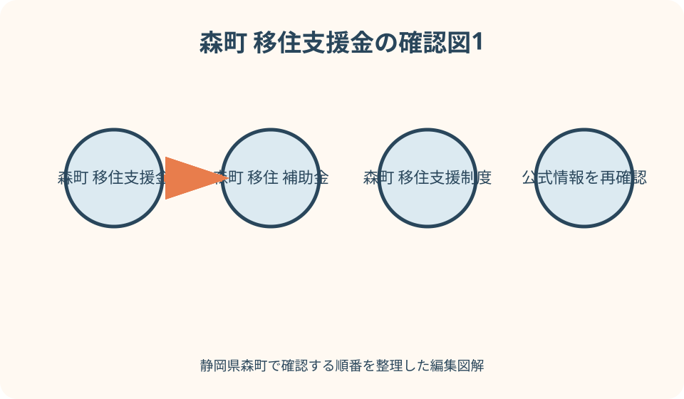
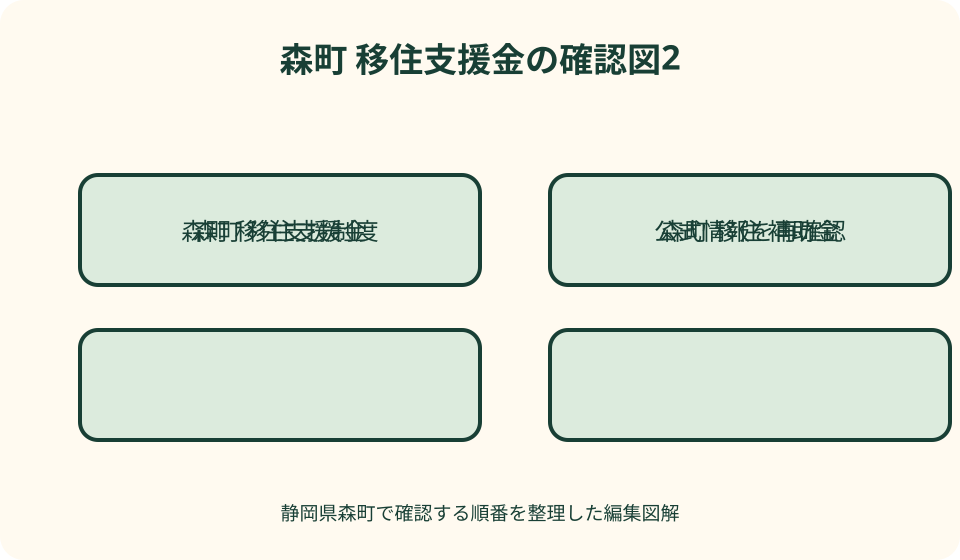

移住・行政手続｜最終確認 2026-08-10
静岡県森町の移住支援金・補助制度を年度別に確認する方法
静岡県森町の移住支援は、移住・就業、移住者の新生活、空き家利活用、新婚生活、子育て、起業などで対象と申請窓口が異なります。前年の金額や名称を今年度へ流用せず、町公式の当年度ページと交付要綱で、居住歴、転入日、契約日、支払日、着工日、就業日、申請期限、予算、併用制限を確認してください。特に契約・購入・工事・転入の前に相談が必要な制度があり得るため、予定日を記入した一覧を森町役場の各担当課へ見せ、対象確認を書面で残します。制度の紹介は受給決定ではなく、国や県の案内だけで森町の申請条件も確定しません。

編集イラスト支援制度は移住者向け一式ではなく目的別の別制度
森町へ移る時に調べる制度は、転入そのもの、東京圏等からの移住と就業、住宅の取得・賃借・改修、空き家の活用、結婚生活、子育て、起業などに分かれます。名称が似ていても対象経費と審査は別です。
一つの世帯が複数制度の候補になることはありますが、同じ領収書を二重に対象へできるとは限りません。2026年度の森町結婚新生活支援補助金ページにも、別の新婚向け応援金と同一経費を重ねられない例が示されています。
最初から受給見込額を足し算せず、世帯、仕事、住まい、子どもの四枚に制度候補を分けます。各制度に対象者、対象経費、申請前行為、締切、必要書類、窓口、併用、交付決定の欄を作ります。
この原稿は2026年8月10日に公式情報を確認しています。申請時には年度途中の受付終了、要綱改正、予算状況があり得るため、ページの更新日と対象年度を再確認してください。
年度・受付期間・対象期間を三つに分ける
制度ページに令和8年度とあっても、対象となる婚姻日、転入日、支払日、工事期間が同じ一年とは限りません。年度名、申請受付期間、対象行為が行われる期間を三列にして書き写します。
年度は原則として四月から翌年三月ですが、制度により受付開始が後日になる、締切が年度末より前になる、婚姻日等の対象期間が暦年をまたぐ場合があります。年度名だけで期限を推測しません。
前年の広報や検索結果は制度の存在を知る入口です。申請判断には当年度の町公式ページ、交付要綱、申請の手引き、様式を使い、ページとPDFの年度が一致するかを確かめます。
次年度へ転入する計画では、現年度制度が継続すると約束されていません。公表前は担当課へ相談し、制度なしでも成立する資金計画を残し、公表後に予定日を再照合します。
四つの日付を先に置く——転入・契約・着手・支払
確認表の左端に、住民票を移す転入予定日、住宅や仕事の契約予定日、工事・事業の着手予定日、代金の支払予定日を置きます。制度ごとにどの日が要件の起算日かを窓口へ確認します。
申請前着手不可の制度で先に工事を始めれば、後から領収書を提出しても対象にならない可能性があります。契約、発注、着工、支払のどれを着手と扱うかも制度ごとに確認し、施工者へ待つ期限を伝えます。
移住・就業の制度では、転入前の居住地・通勤歴、転入後の就業・起業・テレワーク、申請時点、継続意思など複数の時系列要件があります。現在地だけで対象と決めません。
予定変更が生じたら、日付を上書きせず旧予定と新予定を残し、窓口へ再照会します。交付決定前に事情が変わった場合の変更手続や、完了期限へ間に合うかも確認します。

移住・就業支援金は居住歴と仕事の両方を確認する
森町公式の移住定住手続ページは、東京23区の在住者または東京圏在住で23区へ通勤していた人が森町へ移り、指定求人への就業等をした場合の支援を案内しています。すべての県外転入者向けではありません。
確認する居住要件は、どこに、どの期間住み、どこへ通勤していたかです。住民票だけでなく雇用証明等が必要になる場合を想定し、転入前に勤務先や自治体から何を取得するかを町窓口へ聞きます。
仕事側は、静岡県等のマッチングサイト掲載求人への就業、専門人材、テレワーク、関係人口、起業支援金の採択など、対象経路が分かれる場合があります。一般求人への就職なら自動対象とは考えません。
静岡県公式は申請窓口が移住先市町であると案内しています。県や国の概要ページに載る上限額を自分の支給額へ置き換えず、森町の当年度要綱、世帯区分、子ども加算、継続要件を確認します。
移住者新生活応援は五つの用途を混ぜない
森町では過年度資料で、定住促進、空き物件利活用、起業、リモートワーク、お試し移住など複数用途からなる新生活支援が説明されています。ただし過年度の構成が当年度も同一とは限りません。
制度候補ごとに、申請できる人が転入前か転入後か、町内在住期間、物件の空き家バンク登録、仕事の開始時期、滞在の目的、対象支出を分けて確認します。『移住を考えている』だけで全用途の対象にはなりません。
購入、改修、機器、旅費など異なる支出を一枚の領収書一覧へ混ぜず、制度別に請求書、契約書、領収書、支払証明を保存します。対象外経費を除いた金額を自分で確定せず、申請前に担当課へ示します。
現行ページが見つからない、様式が前年のまま、受付期間が書かれていない場合は制度がないとも、続いているとも断定できません。定住推進課へ当年度の実施、予算、様式、事前相談の要否を確認します。
住まい支援は取得・賃貸・改修・利子を分ける
住まいに関する支援は、住宅取得費、家賃、引越費用、リフォーム、耐震、空き家利活用、住宅資金の利子など目的が違います。家を借りる人と買う人、新築と中古、居住開始前後で候補を分けます。
住宅契約前には、対象住宅の所在地、所有者、床面積、用途、申請者との関係、町内業者要件、工事内容を確認します。契約後の申請でよいと推測せず、見積段階で担当課へ相談します。
賃貸では家賃本体、共益費、敷金、礼金、仲介料、駐車場、引越費が別の扱いになり得ます。対象経費名をまとめず、請求書と支払者を項目別に確認します。
補助を使うために本来不要な工事を追加しません。補助対象、住宅性能、家族の必要、自己負担を分け、対象外となった場合でも支払える工事だけ契約します。

空き家支援は物件登録と購入者要件を照合する
森町公式は空き家等利活用推進支援費用補助金を案内しています。名称から買主のリフォーム全般に使えると決めず、空き家バンク登録、所有者・利用者、残置物処分、改修のどれが当年度対象かを確認します。
物件を見つけたら、登録番号、公開状況、所有者、交渉段階、契約予定日、改修予定を一覧にします。空き家バンクへの掲載と補助対象の認定は別と考え、対象確認を取ってから契約順を決めます。
残置物撤去は、誰が申請者か、何を処分できるか、着手前写真、処分業者、領収書名義、売買前後のどちらで行うかを確認します。家財の所有権や処分同意も曖昧にしません。
リフォームでは建物状況調査、耐震、雨漏り、給排水の確認を先に行い、補助対象工事と必要工事を分けます。補助上限に合わせた見積りだけで購入後の総改修費を判断しません。
就業・起業は求人採用と支援採択を分離する
移住支援金の対象求人は、一般の求人情報と同じとは限りません。求人票に対象表示があるか、応募時と就業時に掲載が必要か、雇用形態、勤務時間、関連企業からの転職などの条件を町と県へ確認します。
採用内定は支援金の交付決定ではありません。就業証明、転入日、申請期限、継続就業の意思、勤務先の対象登録を別々に満たす必要があるかを確認し、雇用主にも証明書作成を依頼します。
起業支援について内閣府は、地域課題の解決に資する社会的事業等を都道府県等が審査する仕組みを案内しています。会社を設立した、店を開いたという事実だけで対象になるとは限りません。
起業では公募開始、事業計画提出、採択、開業、経費支払の順序を確認します。設備購入や店舗契約を先行すると対象外になり得るため、県の執行団体と森町窓口の双方へ相談します。
新婚・子育て支援は世帯要件と対象経費を確認する
森町の2026年度結婚新生活支援補助金は、婚姻日、年齢、所得、町内住宅、住民登録など複数要件を公開しています。一つに当てはまるだけでは足りず、夫婦双方の条件を確認します。
同じ年度に新婚向け制度が複数ある場合、住宅取得費や引越費をどちらへ申請するか先に決めます。同一経費の重複不可だけでなく、片方を選ぶと他方の別経費へ影響するかも窓口へ質問します。
子育て関係は、児童手当、医療、保育、妊娠・出産、ひとり親など制度ごとに窓口と基準日が違います。移住者限定ではない制度を『移住支援金』へ混ぜず、転入後の通常手続として別表にします。
子どもの年齢は申請日、基準日、年度末など、どの時点で判定するかを確認します。出生や転校、保育入所が近い世帯は、転入届と各申請の順番、必要な所得・健康・在学書類を事前に聞きます。
対象者の確認は住所・世帯・所得・継続意思の四列
対象者欄は『移住者』だけで終えず、転入元、転入前期間、森町での住民登録、過去の町内居住、世帯員、年齢、所得、税の滞納、暴力団排除など要綱の項目に分けます。
世帯という言葉も、住民票上の世帯、婚姻した夫婦、扶養する子ども、同居者のどれを含むか制度ごとに確認します。申請者だけが条件を満たせばよいとは限りません。
所得要件では、収入と所得を混同せず、対象年、夫婦合算、控除、貸与型奨学金返済等の扱いを当年度手引きで確認します。自分で計算して対象確定せず、必要な所得証明の年度を聞きます。
継続居住や継続就業の意思が要件なら、予定期間と返還条件を確認します。将来必ず住み続けられると断言できない事情がある世帯は、申請前に担当課へ具体的に相談します。
予算・先着・審査を同じ受付中と読まない
制度が年度内に掲載されていても、予算の範囲、申請順、審査、募集枠が設定される場合があります。申請書を出せることと、交付が決まることは別です。
担当課へは、現在受付中か、事前相談枠が必要か、予算残の公表があるか、申請から交付決定までの目安、追加書類が出た場合の期限を確認します。口頭回答の日付と担当部署を記録します。
先着と書かれていない制度を早い者勝ちと決めつけず、逆に締切だけを見て年度末まで余裕があるとも考えません。契約や工事を伴う場合は、審査に必要な時間を工程へ入れます。
交付決定通知を受ける前の支出をどう扱うかは必ず確認します。受付印、事前相談、申請受理が交付決定と同じ効力を持つとは限らないため、文書の名称を区別します。
併用確認は制度名ではなく同じ経費で行う
併用可否を尋ねる時は『AとBは併用できますか』だけでなく、住宅取得費、引越費、改修費、設備費など同じ支払を両方へ計上できるかを確認します。制度全体の併用と経費の重複は別です。
国、県、森町、勤務先、民間団体の支援を使う場合、他制度からの補助額を対象経費から差し引く規定がないか確認します。申請書に他の申請状況を記載する欄があれば正確に記入します。
一枚の請求書に対象と対象外の工事が混在する場合、施工者へ内訳を依頼します。対象制度に合わせて事実と違う品名へ変更せず、契約、見積、請求、領収の内容を一致させます。
併用できない時は、補助率だけで選ばず、対象経費、申請時期、必要書類、居住継続、自己負担を比較します。どちらにも申請できなくても成立する資金計画を基本にします。
転入前相談へ持参する一枚表を作る
相談表の上段に世帯員、年齢、現住所、過去の居住地、勤務先、通勤先、転入予定日、婚姻日、子どもの生年月日を書きます。センシティブな情報の送付方法は窓口へ確認します。
中段には住まいの所在地、空き家バンク登録番号、購入・賃貸、契約予定日、改修内容、見積額、着手予定日、支払者を記載します。物件未定なら未定とし、制度に合わせて急いで契約しません。
下段には就職・転職・テレワーク・起業の別、求人掲載、内定日、就業予定日、事業開始予定日を置きます。現在検討中の他制度も記載し、併用の質問を具体化します。
窓口では、対象可能性、申請前にしてはいけない行為、必要書類、原本・写し、申請期限、予算、併用、交付決定前着手、実績報告、返還条件を順番に聞きます。回答日と次の連絡日を残します。
申請書類は発行元と有効時点まで管理する
住民票、戸籍、所得・納税証明、雇用証明、住宅契約書、見積書、領収書、口座、本人確認など、制度ごとに必要書類を分けます。同名書類でも世帯全員分、続柄入りなど指定が異なります。
転入前自治体や勤務先から取得する証明は早めに確認します。ただし発行後の有効期間が指定される場合があるため、早く取りすぎず、申請予定から逆算します。
電子契約、カード払い、振込の場合、何を支払証明として認めるかを聞きます。利用明細だけで対象経費と支払者が判別できない時に備え、契約書、請求書、領収書を組で保存します。
提出後は申請書一式の写し、提出日、受付方法、追加依頼、交付決定、変更承認、実績報告、入金を一つのフォルダにします。家族内で原本を分散させません。
良い点——確認順を整えると制度を生活設計に戻せる
森町の移住支援を調べる良い点は、住まい、仕事、結婚・子育てという新生活の支出を具体的に棚卸しできることです。制度に該当しなくても、何にいくら必要かが見えます。
町の移住相談窓口、空き家情報、県の就職情報、国の起業支援概要をつなぐと、誰へ何を聞くかを分けられます。一つの窓口が全制度を審査するとは考えず、担当課を確認します。
転入前に日付表を作れば、支援のために生活順を無理に変えるのではなく、契約や着工の前に相談すべき箇所を発見できます。家族、事業者、雇用主とも予定を共有しやすくなります。
年度ごとに同じ書式で確認を残すと、前年から名称や条件が変わった部分を比較できます。検索結果の古い金額に引かれず、現行要綱へ戻る習慣ができます。
注文したい点——支援額から移住計画を逆算しない
注文したい点は、国の概要に示された上限や過年度の広報額を、受け取れる金額として住宅予算へ入れないことです。自治体、世帯、年度、対象経費、審査で変わります。
制度に合わせるため、住民票だけを先に移す、実態のない就業や居住を作ることは避けます。移住とは生活の本拠を移すこととして要綱で定義される場合があり、事実に沿って申請します。
申請期限が近いからと、未調査の中古住宅や改修工事を急いで契約しません。支援を逃す損失より、物件状態や総工事費を確認せず契約する負担が大きい場合があります。
窓口の相談担当者へ受給保証を求めるのでもなく、提出時点の資料で審査されることを理解します。相談記録は確認漏れを減らす資料で、交付決定通知の代わりではありません。
対案・結論——制度なしでも成立する計画を先に作る
結論は、世帯・仕事・住まい・子育ての制度を分離し、年度、対象期間、転入・契約・着手・支払、対象者、予算、併用、期限を一枚表で確認することです。最初の相談は転入や契約より前に置きます。
対象外だった場合の対案は、契約時期を制度目的の範囲で調整できるか、工事を必須部分と将来部分へ分けるか、住宅選択を見直すか、自己資金だけで成立する範囲へ縮めるかです。要件を事実と違う形へ合わせません。
受付終了の場合は、次年度の継続を前提に待たず、移住時期と生活上の必要を優先して判断します。次年度公表後に再確認し、補助がなくても転入できるかを家族で決めます。
個別の受給可否、返還、税務上の扱いは、本記事から法的結論を出せません。森町担当課、静岡県、税務署、社会保険労務士や税理士等、論点に合う窓口へ確認してください。
大石の視点——補助金は移住の理由ではなく確認の道具
大石の視点では、補助金を森町へ移る理由の中心に置くと、年度変更で暮らしの土台まで揺れます。仕事、住まい、交通、家族の希望が成立した後で、対象となる支出を丁寧に確認します。
制度一覧で最も重要なのは金額欄ではなく、申請前にしてはいけないことの欄です。契約、着工、支払、転入の順を一度誤ると戻せない場合があるため、日付を決める前に窓口へ相談します。
町、県、国のページを行き来するのは手間ですが、それぞれ役割が違います。国は枠組み、県は対象求人や県事業、森町は申請窓口と町要件を示すため、最後は森町の当年度資料へ戻ります。
申請できなかった制度も、理由を記録すれば次の家族には役立ちます。制度名、年度、問合せ先、確認日、対象外理由を残し、検索のたびに同じ古い情報へ戻らない台帳を作ることが実務的です。
公式情報・確認先
掲載内容は次の一次情報を基礎に整理しました。営業、料金、催し、交通は変わるため、出発前または手続き前にリンク先で最新情報を確認してください。
- 森町公式 移住定住手続き（静岡県森町、2026-08-10確認）
- 森町公式 森町移住就業支援補助金交付要綱（静岡県森町、2026-08-10確認）
- 森町公式 結婚新生活支援補助金（静岡県森町、2026-08-10確認）
- 森町公式 住もうよ森町新婚さん応援金（静岡県森町、2026-08-10確認）
- 森町公式 空き家等利活用推進支援費用補助金（静岡県森町、2026-08-10確認）
- 静岡県公式 移住支援金について（iju.pref.shizuoka.jp、2026-08-10確認）
- 静岡県公式 移住・就業支援金に係る法人登録（www.koyou.pref.shizuoka.jp、2026-08-10確認）
- 内閣府 起業支援金・移住支援金・地方就職支援金（www.chisou.go.jp、2026-08-10確認）
- 内閣府 起業支援金・移住支援金（www.chisou.go.jp、2026-08-10確認）